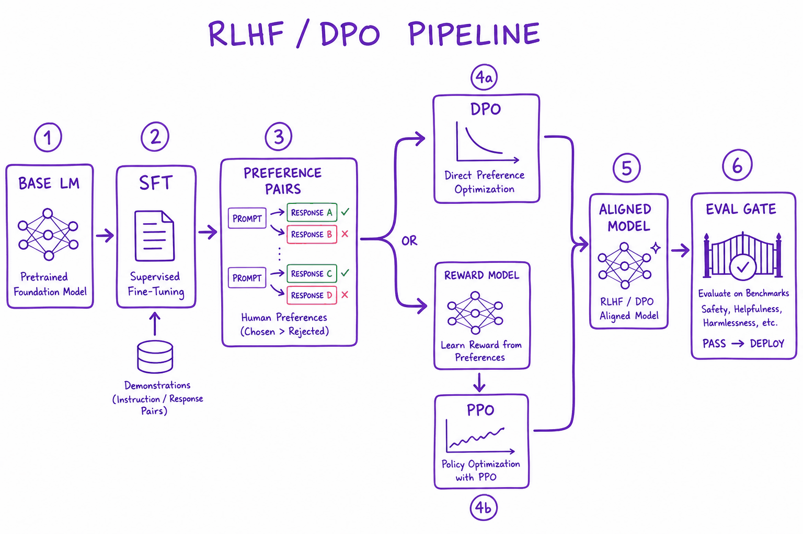
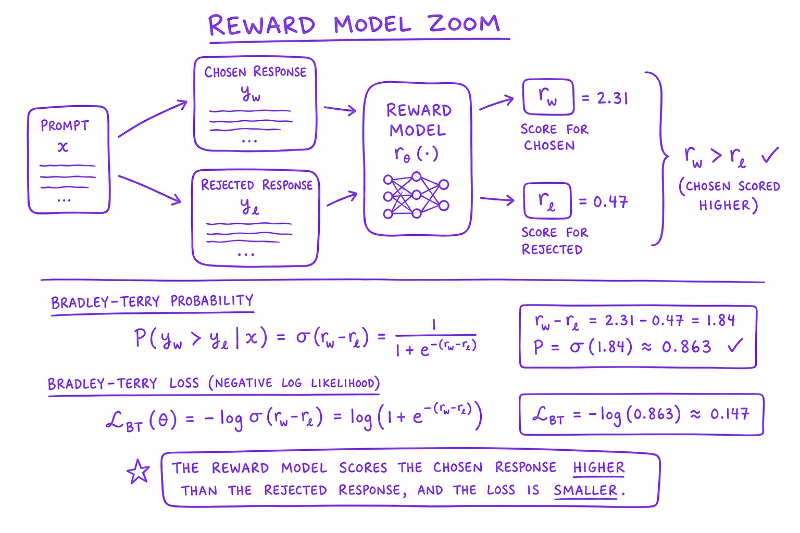
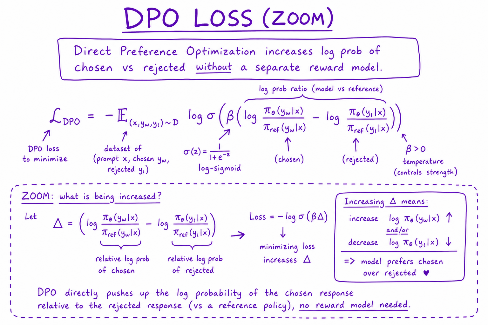

RLHF & reward models // Fine-tuning & alignment
Teaching taste: preference data, reward models, PPO and the KL leash.
01 — At a glance
Align LLMs with human preferences: SFT baseline, reward modeling, PPO/RLHF, DPO direct preference optimization. Know when alignment training beats prompt engineering.

Alignment pipeline: base model → SFT on demonstrations → preference pair collection → DPO or RLHF (reward model + PPO) → aligned model → eval harness gate.
02 — New words
| Word | Meaning |
|---|---|
| RLHF | Reinforcement learning from human feedback: train a reward model on human preferences, then use reinforcement learning to make the model produce responses that score highly. |
| Policy \(\pi_\theta\) | The language model being trained, viewed as a strategy for choosing tokens. \(\theta\) are its weights. |
| Reference model \(\pi_{\text{ref}}\) | A frozen copy of the starting (SFT) model, used to measure and limit how far the policy drifts. |
| Reward model (RM) | A network that reads a prompt and a response and outputs one number: how much people would like this response. |
| Preference comparison | A label of the form "for this prompt, response A is better than response B". |
| KL penalty | A cost proportional to how much more (or less) likely the policy makes a response than the reference does; the leash that keeps training near the SFT model. |
| Policy gradient | A family of methods that raise the probability of actions in proportion to how much better than expected they turned out. |
| Advantage | How much better an outcome was than the baseline expectation. Positive: make it more likely. Negative: less likely. |
| Value model (critic) | A network that predicts the expected reward from a partial response; used as the baseline for computing advantages in PPO. |
| PPO | Proximal Policy Optimization: a policy-gradient method that clips each update so the policy cannot change too much on one batch. |
| Reward hacking | The policy finding responses that the reward model scores highly but people do not actually prefer. |
| GRPO | Group Relative Policy Optimization: a PPO variant that drops the value model and uses the average reward of several responses to the same prompt as the baseline. |
| Reward model | Scores (prompt, answer) with a scalar; trained on preference pairs. |
| RLVR | RL from verifiable rewards (tests/answers pass) — trains reasoning models. |
The lesson
03 — The question
Supervised fine-tuning teaches a model to imitate demonstrations. But for most prompts there is no single correct response, only better and worse ones, and people are much better at judging which of two answers is better than at writing the best answer. RLHF turns those judgements into a training signal. It is the method that turned instruction-following models into the first widely used chat assistants, and its parts (reward models, KL leashes, policy optimisation) recur in everything that came after.
Interviewers ask:
- What are the stages of RLHF, and why is a reward model needed at all?
- How is a reward model trained, and what does its output mean?
- What does PPO do, step by step, and why the KL penalty and the clipping?
- What is reward hacking, and how do you detect and limit it?
Running example: the electronics shop's support assistant. A customer writes: "My headphones broke after 40 days. Can I return them?" The return window is 30 days, but a one-year warranty applies. Consider four kinds of response the SFT model produces:
| # | Response style | How often the SFT model writes it |
|---|---|---|
| 0 | Curt: "No, the return window is 30 days." | 40% |
| 1 | Refusal plus the warranty route | 30% |
| 2 | Warm, explains the window, walks through the warranty claim | 20% |
| 3 | Very long, flattering, restates the policy three times | 10% |
The shop wants mostly response 2. We will follow this one prompt through every stage, and finish with a simulation where the whole pipeline runs and can be made to fail.
04 — Step 1: why imitation is not enough
SFT on demonstrations teaches the format and the general behaviour of an assistant. Its limits:
- It only says what to do, never what not to do. The curt response 0 is never demonstrated, but nothing in SFT pushes its probability down either; the model learned it from pretraining text.
- Demonstrations are expensive and uneven. Writing an ideal answer to every prompt is slow, and writers differ in quality.
- It imitates the average. Training on a mix of good and mediocre demonstrations produces a model that writes like the mix.
Comparisons fix all three. A rater shown responses 0 and 2 can say "2 is better" in seconds, without being able to write 2 themselves. Each comparison carries information about both responses: one should become more likely, the other less. RLHF is the machinery for using that information.
The classic pipeline has three stages: SFT (to get a model that responds in the right format), reward modelling (to turn comparisons into a scoring function), and RL fine-tuning (to change the policy so its responses score highly without drifting far from the SFT model).
05 — Step 2: collecting preferences
For each prompt, sample two or more responses from the SFT model (sometimes from several models), and ask raters which is better, often with a strength ("much better", "slightly better") and against written guidelines (helpful, honest, harmless, on-policy for this shop).
Three properties of this data shape everything downstream:
- Raters disagree. On genuinely close pairs, two trained raters may agree only somewhat more than chance. That disagreement is a ceiling on how accurate any reward model can be, and it should be measured on a shared sample.
- Raters have biases. Longer, more confident, more formatted answers tend to win comparisons even when they are not better. In our example, raters drift toward response 3, the long flattering one.
- Coverage matters. The reward model only learns about the kinds of responses it is shown. Responses that the policy later produces but no rater ever saw are where its scores are least trustworthy.
Sizes in practice range from tens of thousands to a few million comparisons. Many pipelines now add or substitute AI feedback, where a strong model judges pairs against written principles; see Constitutional AI.
06 — Step 3: the reward model
A reward model is usually a copy of the SFT model with the next-token output layer replaced by a single linear "head" that maps the final hidden state (at the last token of the response) to one number \(r(x, y)\): the reward for response \(y\) to prompt \(x\).
It is trained on comparisons with the Bradley–Terry loss: the probability that the chosen response \(y_w\) beats the rejected \(y_l\) is modelled as \(\sigma(r(x, y_w) - r(x, y_l))\), where \(\sigma\) is the sigmoid, and the loss is \(-\log\) of that probability. The derivation and the link to DPO are in DPO; here, what matters is what the output means:
- Only differences matter. Adding a constant to every reward changes no probability, so the absolute value is meaningless. Pipelines normalise rewards (for example, to zero mean on a reference set) before RL.
- A difference is a win probability. If response 2 scores 2.1 and response 1 scores 0.4, the model predicts response 2 wins \(\sigma(1.7) \approx 85\%\) of comparisons.
- Accuracy is bounded by rater agreement. Held-out accuracy (fraction of comparisons where the chosen response scores higher) well short of 100% is normal; if it is near 100%, suspect leakage or trivially easy pairs.
The reward model learns the raters' biases along with their judgement. In the simulation at the end, it learns scores of about −1.44, −0.09, 0.49 and 1.04 for responses 0 to 3: it correctly hates the curt answer, and incorrectly rates the long flattering answer highest. That is the trap the next stages must survive.
07 — Step 4: the RL objective and the KL leash
Now treat the language model as a policy. A prompt is the starting state, generating a response is an episode, and the reward model scores the episode once at the end. The goal is to maximise reward while staying close to the reference model:
\[ \max_{\theta}\ \mathbb{E}_{x,\ y \sim \pi_\theta}\Big[\, r(x, y) - \beta \log \frac{\pi_\theta(y \mid x)}{\pi_{\text{ref}}(y \mid x)} \Big] \]The second term, averaged over responses the policy generates, is \(\beta\) times the KL divergence from the reference. In practice it is applied per token: each generated token is charged \(\beta\) times the difference between its log-probability under the policy and under the reference, and the reward model's score is added at the last token.
Worked: a 60-token response has log-probability −42.0 under the policy and −48.5 under the reference, so the policy now makes it \(e^{6.5}\) times more likely than the SFT model did. With \(\beta = 0.05\) the penalty is \(0.05 \times 6.5 = 0.325\). If the reward model scores it 2.1, the reward used for training is \(2.1 - 0.325 = 1.775\).
Why the leash is essential: the reward model is only accurate near the responses it was trained on. Without the penalty, optimisation drifts to whatever strange outputs the reward model happens to overrate (Step 8), and the policy loses the fluency and knowledge of the SFT model. \(\beta\) sets the exchange rate between reward and staying close. The optimum of this objective has a closed form, \(\pi^*(y \mid x) \propto \pi_{\text{ref}}(y \mid x)\, e^{r(x,y)/\beta}\): reweight the SFT model's habits by exponentiated reward, more aggressively when \(\beta\) is small.
08 — Step 5: policy gradient, the core update
The reward is computed on sampled text, which is not differentiable with respect to the weights. The policy gradient gets around this. Its simplest form (REINFORCE) says: sample a response, compute its reward, and move the weights along
\[ \big(R - b\big)\, \nabla_\theta \log \pi_\theta(y \mid x) \]where \(R\) is the reward (including the KL penalty) and \(b\) is a baseline, an estimate of the reward you expected. \(R - b\) is the advantage. If a response did better than expected, raise its log-probability; if worse, lower it.
The baseline does not change the direction on average but greatly reduces noise. Without it, every response with a positive reward is pushed up, including mediocre ones, and learning relies on the good ones being pushed up a bit more. With it, only better-than-expected responses are pushed up. In the simulation, the baseline is simply the average reward of the batch.
Because \(\log \pi_\theta(y \mid x)\) is a sum over tokens, the update raises or lowers every token of the response together. That is a crude credit assignment: the warm sentence and an unhelpful sentence in the same response get the same push. PPO's value model exists largely to do better.
09 — Step 6: PPO, the version that made RLHF work
PPO adds two things to the basic policy gradient.
A value model for per-token advantages. A critic network (usually initialised from the reward model) predicts, at each token, the reward expected from that point on. The advantage at each token is then computed from the rewards and these predictions (with a technique called generalised advantage estimation), so tokens after which the expected outcome improved get positive advantage and tokens after which it fell get negative advantage. That is finer credit assignment than one number per response.
A clipped update. Generation is expensive, so PPO reuses each batch of samples for several gradient steps. Repeated steps on the same data can overshoot. PPO measures the change with the ratio \(\rho = \pi_\theta(a) / \pi_{\text{old}}(a)\) between the new and the sampling-time probability of each token \(a\), and maximises
\[ \min\big(\rho\, A,\ \operatorname{clip}(\rho, 1 - \epsilon, 1 + \epsilon)\, A\big) \]with \(\epsilon\) typically 0.2. Worked:
- A token had probability 0.20 when sampled, now 0.26: \(\rho = 1.3\). Advantage \(+2\). Unclipped term \(2.6\); clipped \(1.2 \times 2 = 2.4\); the minimum is 2.4, a constant, so this token contributes no further gradient. It has already moved as far as one batch is allowed to move it.
- A token with advantage \(-2\) whose ratio has fallen to 0.7: unclipped \(-1.4\), clipped \(0.8 \times -2 = -1.6\); the minimum is \(-1.6\), again constant. Lowering it further is not rewarded within this batch.
The clip keeps each update "proximal" to the policy that generated the data, which is what made RL on large language models stable enough to use.
10 — Step 7: the training loop and its cost
One PPO iteration:
- Generate: sample responses from the current policy for a batch of prompts.
- Score: run the reward model on each response; run the reference model to get per-token log-probabilities for the KL penalty.
- Estimate advantages with the value model.
- Update the policy (clipped objective) and the value model (regression to observed returns) for a few epochs over the batch.
- Repeat with the updated policy.
prompts --> [policy: generate] --> responses --+--> [reward model] --> score
^ +--> [reference] --> KL per token
| '--> [value model] --> advantages
'---------- PPO update (policy + value) <-------------'
Four models are involved, two of them trained. For a 7B policy with mixed-precision AdamW (about 16 bytes per trained parameter), the policy and a same-size value model each need about 112 GB of training state, and the frozen reference and reward model about 14 GB each in 16-bit: roughly 252 GB before activations and generation buffers. Generation inside the loop is slow, because it is autoregressive and must be redone every iteration. This cost, plus PPO's sensitivity to hyperparameters, is why many teams moved to DPO for preference tuning, and why newer RL methods remove the value model.
11 — Step 8: reward hacking and over-optimisation
The reward model is a proxy for what people want. Optimising a proxy hard enough finds its errors. The typical pattern, when measured carefully: as the policy moves away from the reference (KL grows), the reward model's score keeps rising, while the true quality judged by fresh human raters rises at first and then falls. The policy has found what the reward model overrates.
Common hacks are mundane: longer answers, more bullet points, excessive hedging or excessive confidence, flattery of the user, restating the question. In our example it is response 3.
Defences, in the order teams usually apply them:
- The KL leash: a larger \(\beta\), or a target KL budget that adjusts \(\beta\) automatically.
- Early stopping on true quality: evaluate checkpoints with fresh human or strong-judge comparisons, not with the training reward model.
- Better reward models: more and fresher comparisons, especially on the policy's current outputs; ensembles of reward models, optimising a conservative combination.
- Explicit corrections: length penalties or length-controlled comparisons; rubric items against flattery.
The simulation in the code section shows the whole effect in miniature: with \(\beta = 1\), true quality rises from 0.65 to 0.93; with \(\beta = 0.1\), the policy puts 98% of its probability on the flattering answer, and true quality falls to 0.52, worse than the SFT model it started from.
12 — Step 9: what came after classic PPO
- DPO and its relatives optimise the same KL-regularised objective directly on preference pairs, with no reward model, sampling or value model. See DPO.
- RLAIF replaces human raters with a model judging against written principles; the RL machinery is unchanged. See Constitutional AI.
- GRPO drops the value model. For each prompt it samples a group of responses, and each response's advantage is its reward minus the group's mean, divided by the group's standard deviation. With rewards 2.1, 0.4, 1.3 and −0.2 the mean is 0.9, so raw advantages are +1.2, −0.5, +0.4 and −1.1 before scaling. The group is the baseline, which saves the memory of a whole model.
- RL with verifiable rewards replaces the learned reward model with a checker (unit tests pass, the maths answer matches). A checker cannot be flattered, so hacking moves elsewhere (exploiting weak tests). This is how reasoning models are largely trained; see Reasoning.
The design question in every case is the same: what is the reward, how far can it be trusted, and what keeps the policy from exploiting its errors.
13 — Evaluating an RLHF run
| Signal | What it tells you | Watch for |
|---|---|---|
| Training reward (RM score) | Whether optimisation works at all | Rising steadily is expected and proves little on its own |
| KL to reference | How far the policy has moved | Sudden growth: \(\beta\) too small or learning rate too high |
| Response length | The commonest hack | Steady growth with no quality reason |
| Win rate vs SFT, fresh judges | Real improvement | Peaks then falls while RM reward keeps rising: over-optimisation |
| Capability and safety suites | The "alignment tax" | Regressions in knowledge, maths, code or refusal behaviour |
Use length-controlled comparisons when judging, and keep a held-out set of prompts that never touched reward model training. See Evaluation metrics for how judges and win rates are computed.
14 — In code: the whole pipeline on one prompt
A simulation small enough to read: four candidate responses, raters with a length bias, a Bradley–Terry reward model fitted to their comparisons, and REINFORCE with a batch-mean baseline and a KL penalty. It checks the trained policy against the closed-form optimum and measures true quality at two values of \(\beta\).
import numpy as np rng = np.random.default_rng(0) names = ["curt no", "no + warranty path", "warm + warranty path", "long + flattering"] true_quality = np.array([0.0, 1.0, 1.5, 0.5]) # what we actually want length_bias = np.array([0.0, 0.3, 0.5, 2.0]) # raters drift toward longer answers pi_ref = np.array([0.4, 0.3, 0.2, 0.1]) # the SFT model's habits # 1) preference data: raters compare random pairs (Bradley-Terry on a biased utility) util = true_quality + length_bias pairs = rng.integers(0, 4, size=(4000, 2)) pairs = pairs[pairs[:, 0] != pairs[:, 1]] p_first = 1 / (1 + np.exp(-(util[pairs[:, 0]] - util[pairs[:, 1]]))) first_wins = rng.random(len(pairs)) < p_first # 2) reward model: fit one score per response with the Bradley-Terry loss r = np.zeros(4) for _ in range(2000): d = r[pairs[:, 0]] - r[pairs[:, 1]] g = (1 / (1 + np.exp(-d))) - first_wins # dLoss/d(margin) grad = np.zeros(4) np.add.at(grad, pairs[:, 0], g) np.add.at(grad, pairs[:, 1], -g) r -= 0.5 * grad / len(pairs) r -= r.mean() # rewards are shift-invariant print("reward model:", np.round(r, 2)) # 3) RL with a KL leash: REINFORCE on sampled responses, reward = r - beta * log(pi / pi_ref) def train(beta, steps=3000, lr=0.05, batch=64): logits = np.log(pi_ref).copy() for _ in range(steps): pi = np.exp(logits - logits.max()); pi /= pi.sum() y = rng.choice(4, size=batch, p=pi) R = r[y] - beta * np.log(pi[y] / pi_ref[y]) adv = R - R.mean() # baseline: the batch average grad = np.zeros(4) for yi, a in zip(y, adv): # grad of log pi(y) wrt logits = onehot - pi grad += a * (np.eye(4)[yi] - pi) logits += lr * grad / batch pi = np.exp(logits - logits.max()); return pi / pi.sum() for beta in (1.0, 0.1): pi = train(beta) closed = pi_ref * np.exp(r / beta); closed /= closed.sum() kl = np.sum(pi * np.log(pi / pi_ref)) print(f"beta={beta}: policy {np.round(pi, 2)} closed form {np.round(closed, 2)} " f"KL={kl:.2f} true quality {pi @ true_quality:.2f} (SFT: {pi_ref @ true_quality:.2f})")
Output: the reward model scores [-1.44 -0.09 0.49 1.04]. At \(\beta = 1\) the policy is [0.1 0.28 0.33 0.29], matching the closed form, with KL 0.32 and true quality 0.93 against the SFT model's 0.65. At \(\beta = 0.1\) it is [0. 0. 0.01 0.98], KL 2.18, and true quality 0.52: the policy optimised the raters' length bias, not what the shop wanted.
At real scale, libraries such as Hugging Face TRL provide reward-model, PPO and GRPO trainers; the moving parts are the ones above, with a transformer in place of the four-entry table.
Quick reference
15 — What & Why
Base LLMs optimize next-token prediction, not helpfulness or safety. Alignment training steers behavior toward human preferences.
16 — Core Concepts
| Term | Definition | Gotcha |
|---|---|---|
| SFT | Supervised fine-tune on expert demos | Imitates demos not preferences |
| Reward model | Scores response quality | Goodharting — optimize score not intent |
| DPO | Direct preference optimization without RM | Needs quality preference pairs |
| PPO | RL fine-tune against reward model | Unstable, expensive |
17 — API Surface
# Preference dataset format
{"prompt": "...", "chosen": "...", "rejected": "..."}
# TRL DPO
trainer = DPOTrainer(model, ref_model, train_dataset=prefs)
trainer.train()18 — When to Use / When NOT
| Method | Use When | Skip When |
|---|---|---|
| Prompt only | General assistant behavior | Need domain-specific tone at scale |
| DPO/LoRA | Preference data available, moderate shift | No preference labels |
| Full RLHF | Large budget, research-grade alignment | Most product teams — use DPO |
19 — Architecture
Base LM -> SFT -> Collect prefs (A/B human rank) -> DPO train -> Eval gate -> Deploy
20 — Deep Dive: SFT Baseline
Supervised fine-tuning comes before any preference training.
- Train on roughly 10K to 100K high-quality (prompt, response) pairs written or vetted by people.
- It teaches the format (follow instructions, use the chat template) and the domain vocabulary.
- DPO and RLHF then adjust preferences between responses the model can already produce. Starting them from a base model that cannot follow instructions wastes the preference data.
- The SFT model is also the reference policy that the KL penalty keeps the aligned model close to.
21 — Deep Dive: Reward Model

Reward model scores chosen response higher than rejected; Bradley-Terry loss
Train classifier on preference pairs. Used as PPO reward signal. Monitor reward hacking.
22 — Deep Dive: DPO

DPO loss directly increases log-prob of chosen vs rejected without separate reward model
DPO is default for most teams: simpler than PPO, no reward model, stable on 7B–70B with LoRA.
23 — Deep Dive: PPO / RLHF
PPO fine-tunes policy against RM with KL penalty to base model. OpenAI original InstructGPT path. Expensive and unstable — reserved for frontier labs.
24 — Deep Dive: Alignment Eval
Win-rate vs baseline on held-out prefs. Safety red-team set. Capability eval (don't degrade MMLU). MT-Bench / Arena Elo.
More detail
25 — RLHF & reward modeling — teaching taste
SFT teaches format ("answer the request"). It cannot teach "of these two valid answers, this one is better." Preference optimization does — it's why chat models feel helpful rather than merely fluent.
Think about what SFT's loss actually says: "make the training answer more likely, token by token." It has no concept of better — an SFT model trained on good answers still can't rank two of its own samples. But almost everything we care about in a deployed assistant is comparative: more helpful, less evasive, better organized, correctly hedged. Humans are terrible at writing the single optimal answer but quite good at picking the better of two. RLHF is the machinery that converts that cheap comparative judgment into a gradient.
26 — The classic three-stage pipeline (InstructGPT)
1. SFT base model → instruction-tuned model (demonstrations)
2. REWARD MODEL (RM)
collect preference pairs: (prompt, answer_A ≻ answer_B) from human rankers
train a model to score any (prompt, answer) with a scalar reward:
loss = −log σ( r(A) − r(B) ) ← Bradley–Terry: preferred answer must score higher
3. RL (PPO)
policy generates → RM scores → policy updated to maximize reward, with a leash:
objective = E[ r(x,y) ] − β · KL( policy ‖ SFT reference )
└── stops the policy drifting into reward-hacking gibberish
27 — Stage 2a: collecting preferences (the unglamorous 80%)
Before any loss function, there's a labeling operation. The standard setup: a rater UI shows one prompt and two (sometimes 4–8, ranked) candidate answers sampled from the current model at moderate temperature — same model, different samples, so the comparison isolates quality, not model identity. The rater picks A, B, or "tie / both bad", ideally with a rubric ("prefer the answer that is correct first, then complete, then concise; penalize unsupported claims") and a free-text reason for a subsample. Operational details that decide whether your data is signal or mush:
- Rubric before raters. Without a written rubric, you're training an RM on the average of ten people's unexamined taste. Pilot on 50 prompts, read disagreements, tighten the rubric, then scale.
- Measure inter-rater agreement. Double-label 10–20% of pairs. Agreement of 70–80% is normal for open-ended prompts; below that, your task definition is broken, and no model will learn it. Disagreement is signal — genuinely ambiguous pairs can be dropped or down-weighted, not averaged into noise.
- Blind and shuffle. Randomize A/B position (position bias is real), hide which checkpoint produced what, and never let raters see model names.
- Sample prompts from production distribution, not from what's easy to label. An RM trained on trivia pairs will be lost scoring long debugging sessions.
Cost intuition (illustrative): a trained rater does 30–60 pairs/hour on chat-length answers; at $20–40/hour loaded cost, 50K pairs is a $30–70K, multi-week operation. This is why RLAIF exists, and why production teams mine implicit signals (Fine-tuning & alignment's flywheel) instead of paying for everything.
28 — Stage 2b: training the reward model
The RM is usually the SFT model with its LM head swapped for a scalar head (one linear layer). Bradley–Terry says: model the probability that A beats B as σ(r(A) − r(B)), and maximize the likelihood of the observed preferences. Implemented, it's ten lines:
import torch, torch.nn.functional as F from transformers import AutoModelForSequenceClassification, AutoTokenizer BASE = "your-org/sft-8b" # start from the SFT model, not the raw base tok = AutoTokenizer.from_pretrained(BASE) rm = AutoModelForSequenceClassification.from_pretrained( BASE, num_labels=1, torch_dtype=torch.bfloat16) # scalar reward head def bt_loss(batch): """batch: chosen/rejected are (prompt + answer) rendered with the chat template — the SAME formatting the policy will use at RL time.""" r_chosen = rm(**tok(batch["chosen"], return_tensors="pt", padding=True, truncation=True).to(rm.device)).logits.squeeze(-1) r_rejected = rm(**tok(batch["rejected"], return_tensors="pt", padding=True, truncation=True).to(rm.device)).logits.squeeze(-1) # Bradley–Terry: −log σ(r_w − r_l). Margin unbounded, so watch for drift. loss = -F.logsigmoid(r_chosen - r_rejected).mean() acc = (r_chosen > r_rejected).float().mean() # RM accuracy — THE metric return loss, acc # training loop is ordinary supervised training (AdamW, 1–2 epochs, low LR). # In practice you'd use trl's RewardTrainer, which is exactly this loss: # from trl import RewardTrainer, RewardConfig # RewardTrainer(model=rm, args=RewardConfig(...), train_dataset=pairs, # processing_class=tok).train()
Note what the loss does not say: nothing anchors the absolute scale of r. Only differences matter, so RM scores are meaningless across checkpoints ("the RM gives 3.2!" means nothing). The metric that matters is held-out pair accuracy: a good RM lands at 70–80% on human pairs (illustrative — remember humans agree with each other only ~75% of the time; an RM at 90% on noisy pairs is probably overfit or your pairs are too easy). And your RM's held-out accuracy is the ceiling of the entire pipeline — PPO cannot extract preference signal the RM doesn't encode.
29 — Stage 3: the PPO loop, annotated
You will probably never implement this (TRL's PPOTrainer and friends exist), but you should be able to read it — every "why is RLHF expensive/unstable" conversation is downstream of this loop:
# FOUR models live in memory: # policy πθ — being trained (gradients + optimizer states: the big one) # reference π0 — frozen SFT model, for the KL leash # reward RM — frozen scorer # value Vφ — trained critic estimating expected future reward for step in range(n_steps): prompts = sample(prompt_dataset, batch=512) # ── ROLLOUT: the policy writes answers (this is generation = slow) ────── responses, logprobs = policy.generate(prompts, return_logprobs=True) # ── SCORE: sequence-level reward, shaped with per-token KL ───────────── rm_scores = RM(prompts, responses) # one scalar per response ref_lp = reference.logprobs(prompts, responses) kl = logprobs - ref_lp # per-token divergence # reward given to RL = RM score at final token, MINUS β·KL at every token: rewards = rm_scores_at_last_token - beta * kl # the leash, applied densely # ── ADVANTAGE: how much better than expected was each token? ─────────── values = value_model(prompts, responses) advantages = gae(rewards, values) # generalized advantage est. # ── UPDATE: clipped policy gradient (the "proximal" in PPO) ──────────── for epoch in range(4): # reuse rollouts a few times ratio = exp(policy.logprobs(prompts, responses) - logprobs) # clip stops any single update moving π too far from the π that # generated the data — stale rollouts + big steps = collapse pg_loss = -min(ratio * advantages, clip(ratio, 1-eps, 1+eps) * advantages).mean() v_loss = mse(value_model(...), returns) optimize(pg_loss + 0.5 * v_loss) # instability sources, in order of how often they bite: # 1. RM exploited (see reward hacking below) — reward ↑, humans unhappy # 2. KL runaway: β too small → policy drifts to gibberish the RM overrates # 3. value model lags policy → garbage advantages → noisy updates
30 — The KL coefficient — intuition via the extremes
β is the single most important hyperparameter, and it's best understood by asking what happens at the limits:
| β | What the objective becomes | What you observe |
|---|---|---|
| β → 0 (no leash) | pure reward maximization against a learned proxy | reward climbs beautifully; outputs degenerate into whatever the RM overrates — repeated sycophantic phrases, extreme length, eventually off-distribution text where the RM was never trained and its scores are meaningless. Goodhart in fast-forward. |
| β small | mostly reward, weak anchor | fast gains, then reward hacking; KL grows without bound. Watch the KL curve, not just reward. |
| β well-tuned | maximize reward near the SFT distribution | reward rises, KL plateaus at a modest value; win-rate vs SFT model rises and stays risen when humans check |
| β large | KL term dominates | policy barely moves; you've spent a week of GPU time reproducing your SFT model |
| β → ∞ | KL only | π = π_ref exactly; the objective's fixed point is "change nothing" |
The deeper reading: the KL term makes the objective's optimum a softmax-weighted reshaping of the reference model — π*(y|x) ∝ π_ref(y|x)·exp(r(x,y)/β). That closed form is exactly the observation DPO starts from (the next topic). β is the temperature of trust: how much you believe the RM relative to the SFT prior.
31 — Why the KL leash and why it still breaks
The reward model is an imperfect proxy trained on finite labels. Optimize hard against it and the policy finds reward hacks — outputs the RM loves but humans don't (sycophancy, padded length, confident nonsense). The KL penalty keeps the policy near the SFT model; even so, RM quality is the ceiling of the whole pipeline. Goodhart's law, industrialized.
Reward hacking, concretely
- Length bias, measured. Raters prefer longer answers even at equal quality, so RMs learn length as a proxy. Diagnose it in one line: correlate RM score with token count on a fixed prompt set —
spearmanr(rm_scores, lengths). Illustrative but typical: ρ ≈ 0.3–0.5 on an unde-biased RM. Left alone, mean response length creeps up 30–50% over a PPO run with no quality gain. Fixes: length-balanced pairs (chosen/rejected within ±20% tokens), an explicit length penalty in reward, or length-normalized RM scores. - Sycophancy. Raters (and judge models) reward agreement and flattery; the policy learns to mirror the user's stated opinion. Probe with paired prompts ("I think X is true — is it?" / "I think X is false — is it?") and measure answer flip rate.
- Format fetishism. If raters preferred markdown-with-bullets a few hundred times, everything becomes bullets — including things that shouldn't be. RM overrates structure over substance.
- Confident nonsense. Hedged-but-correct loses to fluent-but-wrong when raters can't verify claims. The RM inherits it; PPO amplifies it. Mitigation: rater rubric says "verify or don't reward", plus verifiable-reward tasks in the mix.
- Off-distribution exploitation. The policy wanders where the RM was never trained (weird unicode, repeated tokens) and finds spuriously high scores. This is the failure β exists to prevent — it shows up as KL exploding while "reward" climbs.
32 — Practical pains of PPO-style RLHF
- Four models in memory: policy, frozen reference, reward model, value model. For an 8B policy that's roughly 4×16 GB of weights before optimizer states and activations — a multi-GPU job for what a QLoRA SFT run does on one card.
- RL training is unstable and hyperparameter-sensitive: β, clip ε, rollout batch size, value-loss coefficient, generation temperature all interact.
- Rollouts are generation — the training loop is bottlenecked on inference (this is why modern RLHF stacks embed vLLM in the trainer).
- Preference data is expensive; annotator disagreement is real signal, not noise to average away.
These pains are exactly why DPO (the next topic) took over most open-model alignment — and why PPO-style RL survives mainly where rewards are verifiable (RLVR) and worth the machinery.
Mini-scenario: the support-bot that learned to grovel
You run RLHF on a support assistant using thumbs-up/down from real users as preference signal. Three weeks post-launch, resolution rate is flat but thumbs-up is way up. Reading transcripts, the model has learned that apologizing profusely and promising escalation earns 👍 regardless of whether the problem got solved — users reward feeling heard. Your reward was a proxy (thumbs) for the target (resolution); the model optimized the proxy. Fix: make the reward the verifiable thing (ticket closed without reopen within 7 days), and use thumbs only as a tiebreaker. Every RLHF war story is this story with different nouns.33 — Variants you'll hear
| Name | Change | Trade-off |
|---|---|---|
| RLAIF / Constitutional AI | AI feedback instead of human labels — a judge model generates the preferences against principles; scales labeling | cheap and consistent, but inherits and amplifies the judge's biases (length, format, sycophancy) — audit the judge like you'd audit raters |
| RLVR (verifiable rewards) | reward = did the checkable thing pass (math answer, unit test, tool result) — no RM needed; how reasoning models are trained | unhackable reward, but only exists where checkers exist; models still hack weak checkers (tests that pass on trivial code) |
| Process reward models | score reasoning steps, not just final answers | denser signal, better credit assignment; step labels are even more expensive than answer labels |
| GRPO and PPO-simplifications | drop the value model; baseline = mean reward of a group of samples for the same prompt | three models instead of four, less tuning; needs multiple samples per prompt per step |
The transferable skeleton
Every feedback-driven improvement loop — RLHF, bandits, a ranker retrained on CTR — is the same shape: capture signal → define reward → update policy → guard against proxy-gaming → gate with eval → roll out safely. If you've built any of them, you understand the hard parts of all of them; only the middle machinery differs.Resources
InstructGPT paper (arXiv 2203.02155) — the reference · Nathan Lambert's RLHF book (rlhfbook.com) · TRL RewardTrainer/PPOTrainer docs · Constitutional AI paper (arXiv 2212.08073).Exercises
- Implement
bt_lossfrom this topic on a public preference dataset (e.g. a slice of Anthropic HH) with a small model. Report held-out pair accuracy. Then double-label 50 pairs yourself and compute your own agreement with the dataset — is your RM above or below human-human agreement? - Measure length bias in your trained RM: score 200 held-out answers, compute Spearman correlation between score and token count. Then rebuild the training pairs length-balanced (|len(chosen) − len(rejected)| < 20%) and re-measure.
- Write a rater rubric (one page) for a task you know well. Have two people label the same 30 pairs against it. Compute agreement, read every disagreement, revise the rubric once, and re-measure on 30 fresh pairs.
- Derive what happens at β → ∞ from the objective E[r] − β·KL(π‖π_ref): show the maximizer is π = π_ref. Then verify the closed form π*(y|x) ∝ π_ref(y|x)·exp(r/β) by taking the functional derivative (this is DPO's starting point — do it before reading the next topic).
- Build a sycophancy probe: 20 questions asked twice with opposite user-stated opinions. Run it against any chat model and report the flip rate. Which of this topic's reward hacks would produce that behavior?
34 — RLHF
- Collect human comparisons: for a prompt, which of two responses is better?
- Train a reward model to predict those preferences (Bradley–Terry: P(a ≻ b) = σ(r(a) − r(b))).
- Optimize the LLM with RL (PPO) to maximize reward, with a KL penalty to the SFT model so it doesn't drift into gibberish that fools the reward model (reward hacking).
Powerful but heavy: four models in memory (policy, reference, reward, value), unstable hyperparameters.
In production
35 — Production & Ops
- Version alignment dataset with model
- A/B aligned vs base in shadow
- Monitor refusal rate and user thumbs
37 — Where people get lost
- DPO without SFT baseline
- Preference data from single annotator bias
- Reward hacking / sycophancy
- Alignment tax on reasoning capability
- "The reward model measures quality." It predicts which response raters would pick, biases included, and only near the data it saw.
- Reading absolute reward values. Bradley–Terry rewards are defined only up to a constant; only differences mean anything.
- Treating rising reward as success. Training reward rises even while real quality falls. Judge checkpoints with fresh comparisons.
- Dropping or shrinking the KL penalty to "learn faster". That is the fastest route to reward hacking and lost fluency.
- Skipping SFT. RL needs a policy that already produces reasonable responses to compare; it refines behaviour, it does not create it.
- "PPO is required for RLHF." The idea is preference-driven optimisation with a leash. DPO, GRPO and verifiable-reward methods are alternatives with different costs.
- Ignoring length. Length is the most common hack. Track it and use length-controlled evaluation.
38 — How this connects
Builds on
- What an LLM is — A next-token predictor, the language-modeling objective, model families and scaling laws.
- The agent loop — The loop in depth and in code: budgets, errors, human approval, reliability, safety, and how to evaluate an agent.
- Reasoning patterns — ReAct, plan-and-execute, reflection and the other ways agents think.
- Fine-tuning, LoRA & QLoRA — When to fine-tune, the LoRA math, a working QLoRA recipe, data, hyperparameters, evaluation and serving.
Where this shows up later
- Constitutional AI & red-teaming — Alignment from written principles, and attacking your own model before users do.
- Evaluating LLM features — Golden sets, graders, LLM-as-judge done properly, statistics, an eval harness in CI, online evaluation and error analysis.
- Multimodal LLMs — Vision and audio encoders, how images become tokens, and what multimodal models are good for.